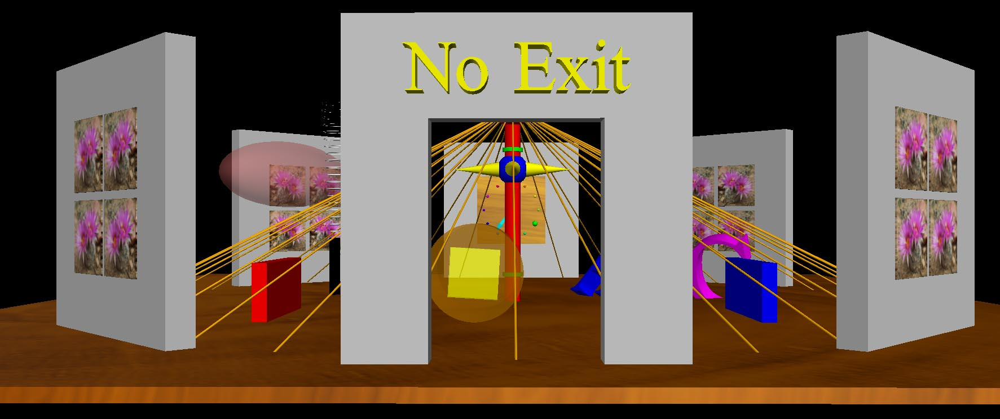

VPython 6
3D
Programming for Ordinary Mortals |
 |
Click here to return to the main VPython page for instructions on using supported VPython. Or, to install Classic VPython 6, which is no longer supported:
· Follow
the instructions given on the Download links in the left margin. Rotating and zooming the camera is the same as for
GlowScript VPython except that neither touch nor the mouse scrollwheel are
supported.
· Classic VPython 6 will remain available, but will not henceforth be
updated.
Descriptions of the Classic VPython 6 options available in the left margin:
Documentation: Overview,
tutorials, and detailed documentation
What's new in VPython 6: New mouse/keyboard handling; native buttons, sliders, etc.
Change log: History of changes
User forum. (Until Feb. 2013, there was a mailing list whose archives may be found at https://sourceforge.net/mailarchive/forum.php?forum_name=visualpython-users. Please do not write to that list; instead post on the User forum.)
VPython on Stack Overflow: A third party question and answer site for users to share about VPython. We do encourage people to post to the User forum, as there is a larger number of knowledgeable users there.
Contributed programs: Interesting
and useful programs contributed by users
For developers: For
those interested in contributing to further development of Python
Python web site: The
Python programming language, on which VPython is based
Development of VPython
was supported in part by the National Science Foundation
|